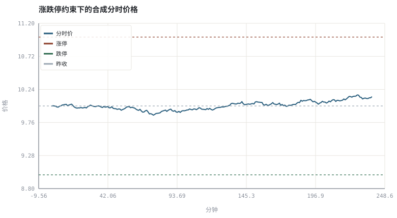

第 04 章交易所制度：竞价、涨跌停、T+1 与交收
价格不是连续曲线，而是规则约束下撮合出来的离散事件流。
本章位置：第 03 章列出可交易产品，本章给出它们的调用规则；第 05 章 · 账户、费用、税与适当性 继续讲账户、费用与适当性，第 06 章 · 行情数据模型：OHLCV、复权与时间戳 则把规则产出的行情写成数据模型。
撮合引擎是一段确定性的 reduce：输入是按价格排序的订单事件，输出是成交序列。涨跌停是 clamp，T+1 是状态机里的 locked_until 字段。规则不是注释，是控制流。
- 能解释集合竞价如何决定开盘价与成交量。
- 能说明涨跌停、最小报价单位、T+1 与交收对策略的硬约束。
- 能区分「成交」与「交收」，理解资金/证券可用与可取的时间差。
- 能用一个限价单簿手算最大可成交量。
§知识点地图
每个知识点都配了 1～2 个扩展学习链接；本章完整资源清单见 扩展学习。
| # | 知识点 | 扩展学习 | 状态 |
|---|---|---|---|
| 1 | 集合竞价与连续竞价 | 上海证券交易所 · 香港交易所 HKEX | 正文已覆盖 |
| 2 | 订单簿与撮合 | Order book · Market microstructure | 正文已覆盖 |
| 3 | 涨跌停与价格笼子 | 上海证券交易所 · 香港交易所 HKEX | 正文已覆盖 |
| 4 | 最小报价单位 | 上海证券交易所 · 香港交易所 HKEX | 正文已覆盖 |
| 5 | T+1 与交收 | Settlement (finance) · 中国证券登记结算 | 正文已覆盖 |
| 6 | 结算与登记 | Settlement (finance) · 中国证券登记结算 | 正文已覆盖 |
| 7 | 港股美股规则差异 | 上海证券交易所 · 香港交易所 HKEX | 正文已覆盖 |
| 8 | 停牌与公司行动 | 上海证券交易所 · 香港交易所 HKEX | 正文已覆盖 |
§4.1开盘价是怎样被算出来的
集合竞价把所有限价单按「价格优先、时间优先」累积：对每个候选价 p，可买量 = 所有买价 ≥ p 的委托量，可卖量 = 所有卖价 ≤ p 的委托量，成交量 = min(可买量, 可卖量)。取成交量最大的价格（并列时按交易所规则取中间价/最近价）为开盘价。
V(p) = min( Σ q_bid · 1{price_bid ≥ p}, Σ q_ask · 1{price_ask ≤ p} )
这是一道纯算法题：排序 + 前缀和 + 取最大值。第 15 章会把同一份订单簿结构用于盘口深度分析。
§4.2制度是策略的硬约束
| 规则 | 含义 | 对策略的影响 |
|---|---|---|
| 涨跌停 / 价格笼子 | 单日价格只能在区间内变动 | 信号可能连续多日无法成交；回测必须建模「不可成交」 |
| 最小报价单位 tick | 价格只能是 tick 的整数倍 | 高频与做市策略的利润上限由 tick 决定 |
| T+1 / T+0 | 当日买入的证券何时可卖 | 日内策略的可行性、资金占用 |
| 交收（结算） | 成交后资金与证券的所有权转移 | 「可用」不等于「可取」；股息、红利税的登记日口径 |
| 交易时段 | 开盘集合竞价、连续竞价、收盘集合竞价 | 同一天的不同时段流动性与价差差异极大 |
| 停牌 / 公司行动 | 暂停交易、拆股、分红、配股 | 价格序列出现非交易性跳变（见第 06、25 章） |
A 股普遍有 ±10%（部分板块 ±20%）涨跌幅与 T+1 交收安排；港股、美股无统一涨跌停、可 T+0，但有不同的结算周期（美股已缩短至 T+1）。跨境比较时必须把规则差异写进回测引擎，否则同一段代码在两个市场给出不同含义的「成交」。
§4.3把规则写进回测，而不是写进注释
回测里最常见的制度性错误：假设任意价格都能成交、假设当天买当天能卖、假设分红不产生价格跳变。第 26 章的事件驱动引擎会显式维护「信号 → 下一根可成交 K 线 → 费用 → 交割」这条状态链；本章先建立规则的词汇表。
§Python 分析实例
实验 4-1 · 集合竞价撮合与涨跌停约束下的日内路径
#!/usr/bin/env python3
# -*- coding: utf-8 -*-
"""用限价单簿求最大成交量开盘价，再模拟受涨跌停约束的 240 分钟分时价格。
数据为合成数据或模型示意，仅用于教学，不构成投资建议。
"""
from __future__ import annotations
import math
import pathlib
import random
import statistics
import sys
sys.path.insert(0, str(pathlib.Path(__file__).resolve().parents[3] / "tools"))
from chart import Chart, candlestick, heatmap, BLUE, RED, GREEN, AMBER
FIG = pathlib.Path(__file__).resolve().parents[1] / "fig"
FIG.mkdir(exist_ok=True)
random.seed(7)
# ---- 参数区 ----
BIDS = [(10.02, 300), (10.01, 200), (10.00, 500), (9.99, 400), (9.98, 600)]
ASKS = [(9.98, 200), (9.99, 300), (10.00, 400), (10.01, 200), (10.02, 500)]
PREV_CLOSE = 10.00
LIMIT = 0.10 # ±10% 涨跌停
MINUTES = 240
VOL_MIN = 0.0012 # 每分钟价格波动尺度
# ---- 计算与作图 ----
prices = sorted({p for p, _q in BIDS} | {p for p, _q in ASKS})
best_px, best_vol = None, -1
for p in prices:
demand = sum(q for pb, q in BIDS if pb >= p)
supply = sum(q for pa, q in ASKS if pa <= p)
vol = min(demand, supply)
if vol > best_vol or (vol == best_vol and best_px is not None and abs(p - PREV_CLOSE) < abs(best_px - PREV_CLOSE)):
best_px, best_vol = p, vol
rng = random.Random(7)
up, down = PREV_CLOSE * (1 + LIMIT), PREV_CLOSE * (1 - LIMIT)
px, path_ = best_px, []
touches = 0
for _ in range(MINUTES):
raw = px * (1 + rng.gauss(0, VOL_MIN))
new = min(up, max(down, raw))
if new == up or new == down:
touches += 1
px = new
path_.append(px)
c = Chart(FIG / "04-intraday.svg", "涨跌停约束下的合成分时价格", xlabel="分钟", ylabel="价格")
c.line(range(MINUTES), path_, BLUE, label="分时价")
c.hline(up, RED, label="涨停")
c.hline(down, GREEN, label="跌停")
c.hline(PREV_CLOSE, "#9aa6b2", label="昨收")
print("图:", c.save())
print("集合竞价开盘价=%.2f 成交量=%d | 收盘=%.2f 涨跌幅=%.2f%% | 触及涨跌停分钟数=%d" %
(best_px, best_vol, px, 100 * (px / PREV_CLOSE - 1), touches))操作：手工列出每个候选价的 demand/supply，核对 best_px；再把 LIMIT 改成 0.02 观察触及次数。 预期与判读：开盘价由最大可成交量决定，与「买卖双方报价的中点」不是一回事。涨跌停是硬边界：一旦触及，价格被截断而委托继续堆积，回测若不建模就会高估成交能力。
改参数看趋势：把 VOL_MIN 提高十倍，看路径如何贴着边界走——这对应真实市场里的流动性枯竭。 文件位置：part1/04-market-rules/code/04-auction.py

代码块右上角可一键复制；仓库里的 code/*.py 由 tools/extract_code.py 从这些代码块自动抽取。脚本只用标准库、固定 random.seed(7)，运行后写出 fig/*.svg；批量运行用 ./tools/run_python.sh。
§本章参考资料
按本章知识点挑选的精读资料；更多检索入口见 扩展学习。
Settlement (finance)
百科 · 参考资料成交与交收分离、T+1 与货银对付
怎么用：成交与交收分离的一般定义https://en.wikipedia.org/wiki/Settlement_(finance)
§常见误区
- 把「成交日」当「交收日」，导致股息与红利税口径错误。
- 在涨跌停日假设可以任意价格平仓。
- 用港股/美股的规则回测 A 股标的（或反过来）。
- 忽略最小报价单位，让回测出现不可能存在的成交价。
§习题与思考
- 给 BIDS/ASKS 增加一档，使最大成交量出现并列，讨论交易所的并列取价规则。
- 在示例里加入「涨停时买单无法成交」的计数，说明它如何改变可执行成交量。
- 查你所在市场 ETF 的交收周期，与股票比较并说明对资金占用的影响。
§扩展学习
以下资料按本章知识点挑选，可直接精读或对照真实数据；知识点地图里每一条也挂了 1～2 个直达链接。
- 上海证券交易所（机构）：交易规则、集合竞价、ETF 与债券业务规则
上海证券交易所 - 香港交易所 HKEX（机构）：港股、ETF、牛熊证与衍生品规则
香港交易所 HKEX - 美国 SEC（机构）：披露文件、基金监管与执法信息
美国 SEC - Settlement (finance)（百科）：成交与交收分离、T+1 与货银对付
Settlement (finance) - 中国证监会 CSRC（机构）：监管规则、投资者保护与行政处罚的权威来源
中国证监会 CSRC
继续扩展：在 Google Scholar 检索本章相关论文 · 在 MIT OCW 检索配套课程 · 在 arXiv 检索预印本 · 全书参考资源总表 · 附录 A 速查与链接总表
§延伸阅读与内链
- 第 15 章 · 盘口、分时与逐笔：价格是怎样形成的 把订单簿展开成盘口与深度分析；第 26 章 · 事件驱动回测引擎：从信号到成交 在回测里实现可成交判定。
- 第 29 章 · 订单执行、滑点与市场冲击 讨论限价单与市价单在不同制度下的滑点。